Byggnadsvård
Varsam renovering av äldre hus, fönster och dörrar. Vi tar hand om husets karaktär med respekt för originaldetaljer och traditionella metoder.
Byggnadsvård, snickerier och naturmaterial. För dig som vill ta hand om ditt hus i Sjöbo och på Österlen.
En dörr som går att laga. Ett kök som kan förnyas. Trä som får fortsätta leva.
Vi utgår från huset och väljer material och metoder som passar. Med omtanke om det befintliga och ett hantverk som får ta plats.
Lär känna PhanterByggFrån äldre hus till platsbyggda detaljer. Vi hjälper dig att bevara, reparera och skapa nytt med ett genomtänkt hantverk.
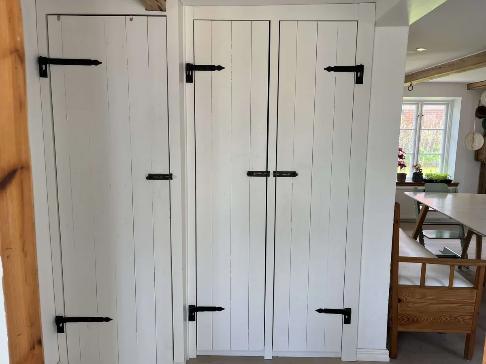
Varsam renovering av äldre hus, fönster och dörrar. Vi tar hand om husets karaktär med respekt för originaldetaljer och traditionella metoder.
Platsbyggda garderober, trädetaljer och reparationer. Måttanpassat efter rummet och utfört med omsorg om både funktion och uttryck.
Kök, golv och ombyggnader där vi ser möjligheterna i det befintliga. Bevara det som fungerar och komplettera där det behövs.
Vi hjälper även till med takarbete, tillbyggnader, trädäck, fönster- och dörrbyten samt samordning. Kontakta oss om asbestsanering eller andra arbeten, så går vi igenom vad ditt projekt behöver.
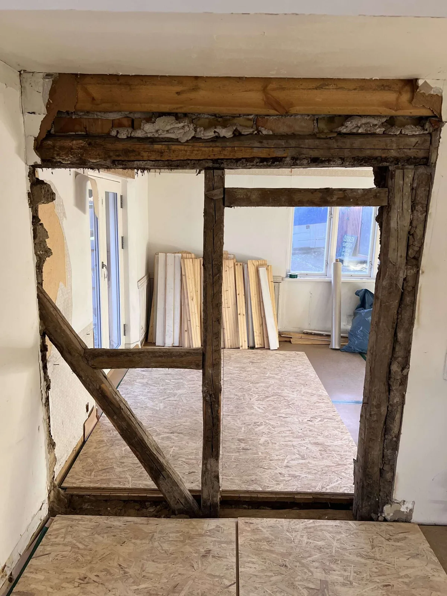
Trä, lindrev, linoljefärg och lerfärg är en del av vårt arbete. Materialvalen får ta tid, för de ska fungera tillsammans med huset.
Egna arbeten, från det stora till det lilla.
Tryck på en bild för att se hela motivet.
Platsbyggd inredning med sittbänk och förvaring, anpassad till hallens fönster och vinklar.
Måttanpassade snickerier med genomtänkta detaljer, från luckor till beslag.
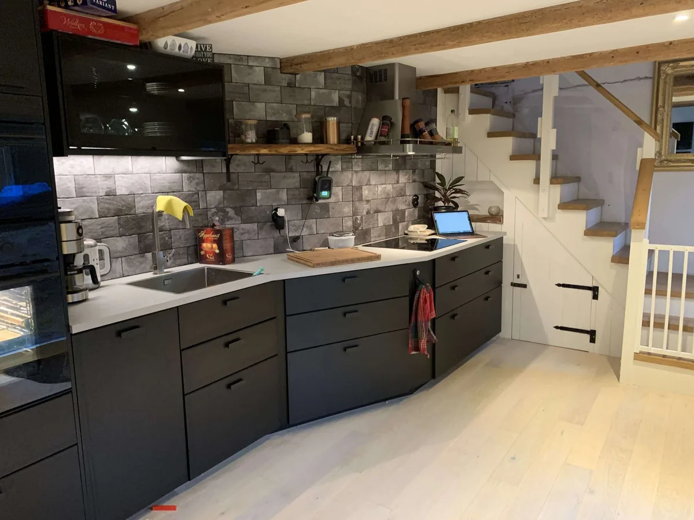
Renovering och köksmontering med plats för både husets uttryck och vardagen.
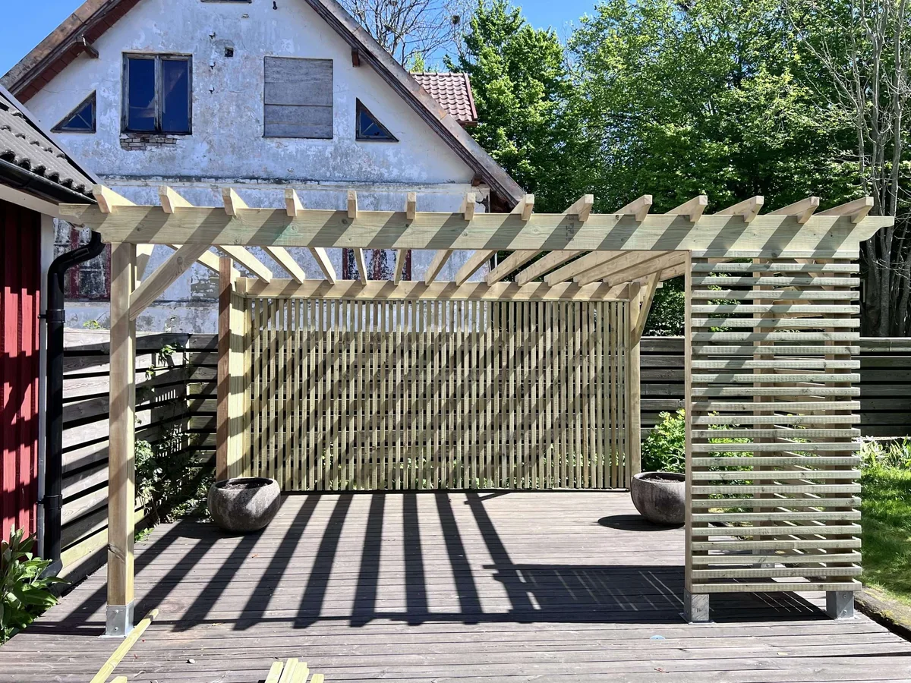
Trädäck, pergola och trädetaljer som formar en plats att vara på.
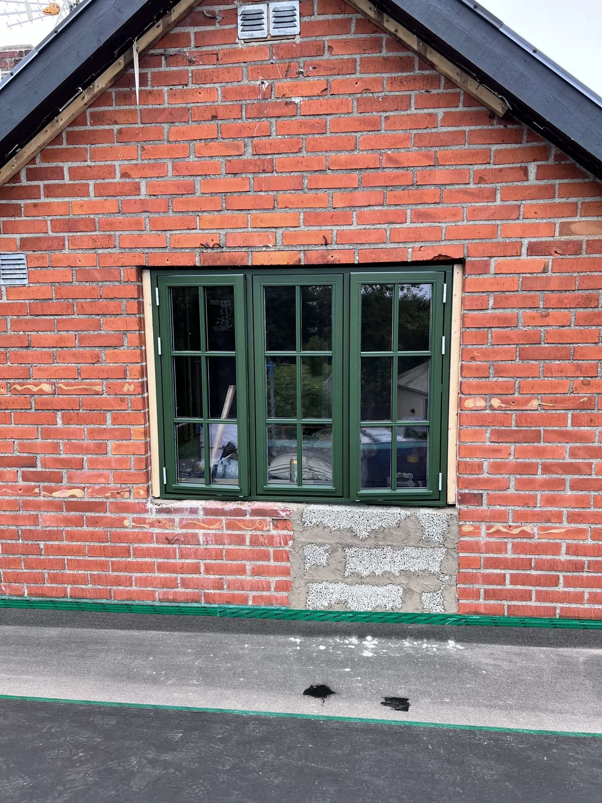
Fönster, trä och äldre fasader. Delarna som tillsammans ger ett hus sin karaktär.
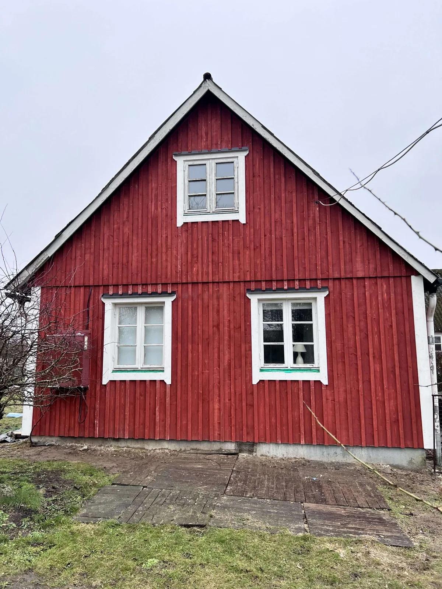
Byggnadsvård och varsam renovering med respekt för det befintliga.
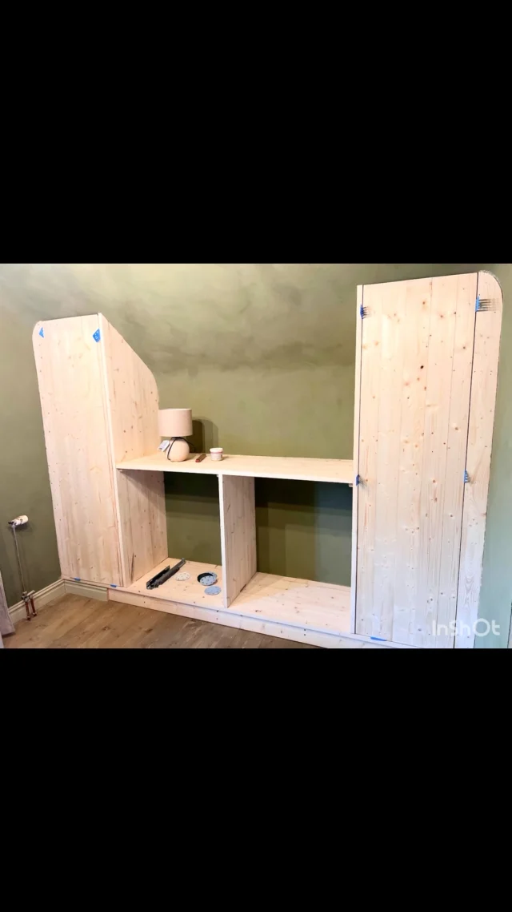
Från lösa brädor till garderob med stomme, hyllor, luckor och beslag. Ett pågående snickeriarbete.
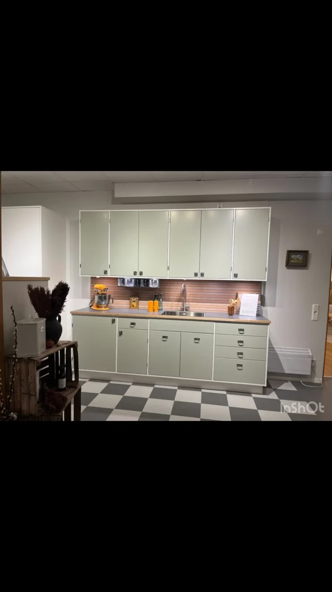
Luckbyte i samarbete med Smedstorps Snickeri. Ett nytt uttryck utan att allt behöver rivas ut.
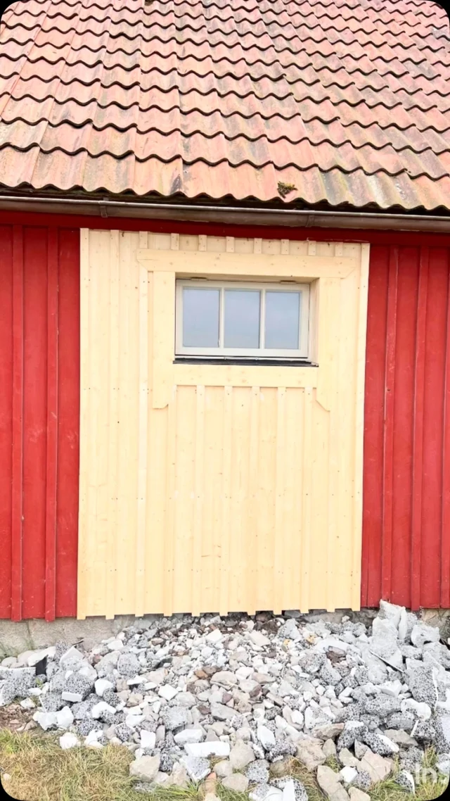
Traditionella material och metoder med omsorg om husets befintliga delar.
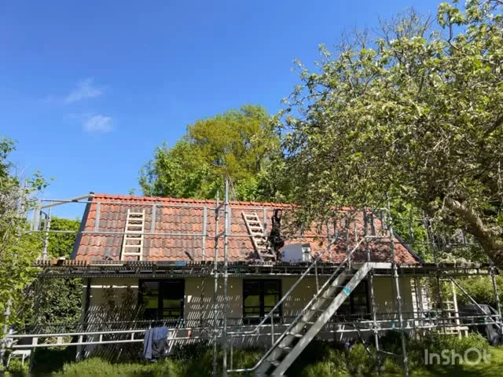
Återbruk är en del av att förstå vad huset redan har.
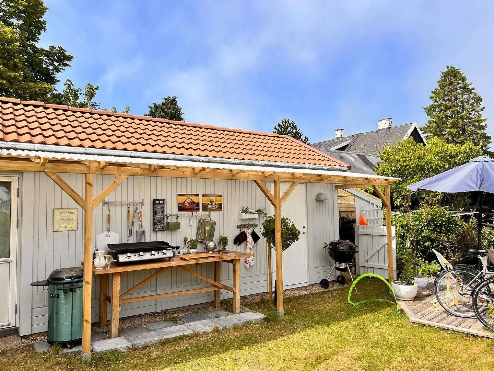
Trädetaljer, tak och plats för livet utanför huset.
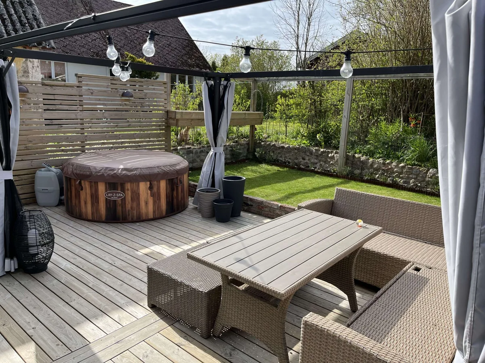
Trädäck och utemiljöer som anpassas till huset och trädgården.
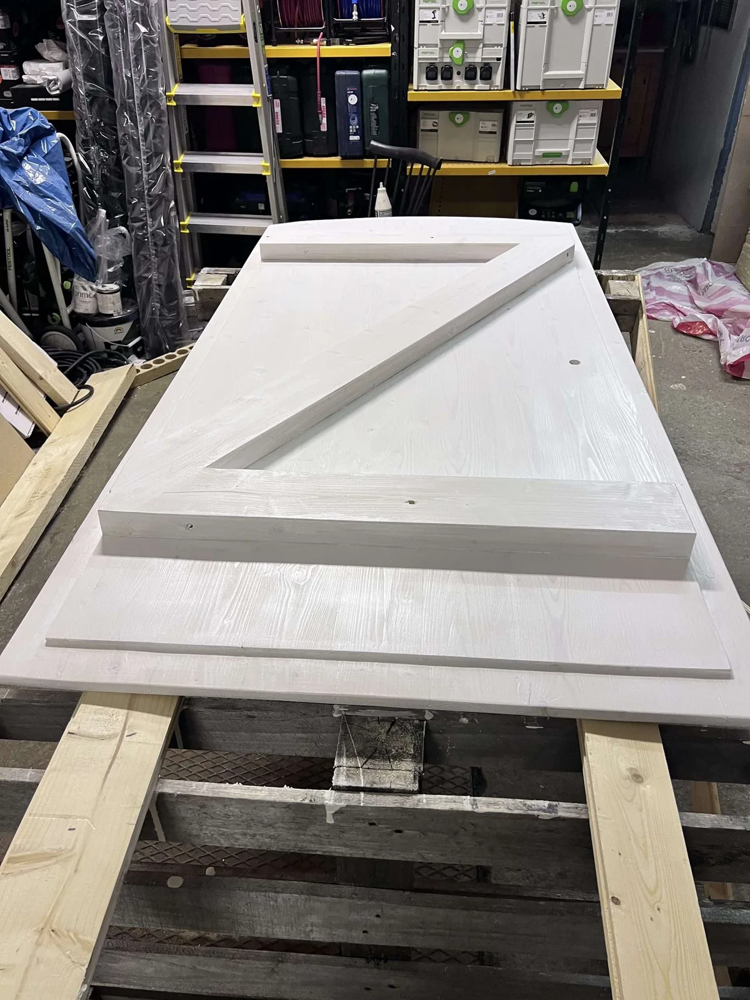
PhanterBygg finns i Lövestad och arbetar i Sjöbo, Simrishamn och på Österlen. Vårt fokus är personligt hantverk, naturmaterial och omsorg om både äldre hus och nya snickerier.
Vi vill förstå vad du vill göra och vad huset behöver. Med en nära dialog om material, omfattning och detaljer hittar vi ett upplägg som passar.
Ring och berättaRing eller mejla om huset, dina idéer och vad du vill ha hjälp med.
Vi går igenom omfattning, materialval och förutsättningar för en offert.
Vi håller kontakten kring arbetet och de beslut som behöver fattas.
Tillsammans går vi igenom resultatet och detaljerna när arbetet är färdigt.
Här är svaren på några vanliga frågor. Du är alltid välkommen att höra av dig.
Vi utgår från Lövestad och arbetar i Sjöbo, Simrishamn och på Österlen. Hör av dig om ditt hus ligger i närheten så pratar vi om möjligheterna.
Ja, vi arbetar också med mindre reparationer och måttanpassade snickerier. Berätta vad du behöver hjälp med, till exempel en dörr eller en platsbyggd garderob.
Ja. Vi arbetar bland annat med trä, lindrev, linoljefärg, linoljelasyr och lerfärg. Material och metod väljs utifrån huset och arbetets förutsättningar.
Ring 073-362 09 17 eller mejla info@phanterbygg.se. Beskriv gärna vad du vill göra och var huset finns. Bifoga bilder om du har, så har vi något att utgå ifrån. Offerten är kostnadsfri.
Ett äldre hus, en dörr att bevara eller ett snickeri som ska passa precis. Berätta om ditt projekt så tar vi det därifrån.
Mejla om ditt projekt